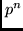
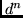
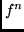

Next: About this document ...
Up: The Library for Integration
Previous: Acknowledgements
-
- 1
-
C. Froese Fischer, T. Brage and P. Jönsson,
Computational Atomic Structure. An MCHF Approach
(Institute of Physics Publishing, Bristol/Philadelphia, 1997).
- 2
-
U. Fano, "Interaction between configurations with several
open shells", Phys. Rev. A., V. 140, No. 1A, p. A67 - A75 (1965).
- 3
-
G. Gaigalas and Z. Rudzikas,
"On the secondly quantized theory of the many-electron atom",
J. Phys. B: At. Mol. Opt. Phys., V. 29, p. 3303 - 3318 (1996).
- 4
-
G.A. Gaigalas, Z.B. Rudzikas and C. Froese Fischer,
"An efficient approach for spin-angular integrations in
atomic structure calculations",
J. Phys. B: At. Mol. Opt. Phys., V. 30, p. 3747 - 3771 (1997).
- 5
-
G.A. Gaigalas, A. Bernotas, Z.B. Rudzikas and C.
Froese Fischer, "Spin-other-orbit operator in the tensorial
form of second quantization", Physica Scripta, V. 57,
p. 207 - 212 (1998).
- 6
-
G.A. Gaigalas, Z.B. Rudzikas and C. Froese Fischer,
"Reduced coefficients (subcoefficients) of fractional
parentage for p -, d -, and f -shells",
Atomic Data and Nuclear Data Tables, V. 70, p. 1 - 39 (1998).
- 7
-
G. Gaigalas, "Integration over spin-angular variables
in atomic physics", Lithuanian Journal of Physics, V. 39
p. 79 - 105 (1999).
- 8
-
A.P. Jucys and A.J. Savukynas, Mathematical
Foundations of the Atomic Theory (Mintis, Vilnius, 1973)
(in Russian).
- 9
-
R.D. Cowan, The Theory of Atomic Structure and Spectra
(Berkeley, CA: University of California Press 1981).
- 10
-
G. Gaigalas and C. Froese Fischer,
"Extension of the HF program to partially filled f -subshells",
Comput. Phys. Commun., V. 98 p. 255 - 264 (1996).
- 11
-
C.F. Fischer, "The MCHF atomic-structure package",
Comput. Phys. Commun., V. 64, No. 3, p. 369 - 398 (1991).
- 12
-
D.A. Varshalovich, A.N. Moskalev and V.K. Khersonskii,
Quantum Theory of Angular Momentum
(World Scientific, Singapore, 1988).
- 13
-
V.V. Špakauskas, J.M. Kaniauskas and Z.B. Rudzikas,
"Reduced in quasi-spin space coefficients of fractional
parentage and matrix elements of tensorial operators",
Liet. Fiz. Rink., V. 18, No. 3, p. 293 - 315 (1978).
(English translation- Sov. Phys. Coll.
18(3), 1 (1978) from Allerton Press, New York).
- 14
-
Z. Rudzikas, Theoretical Atomic Spectroscopy
(Cambridge Univ. Press, Cambridge, 1997).
- 15
-
C.F. Fischer, "A general multi-configuration Hartree-Fock
program", Comput. Phys. Commun. V. 64, No. 3, p. 431 - 454 (1991).
- 16
-
R. Glass and A. Hibbert, "Relativistic effects in many
electron atoms", Comput. Phys. Commun., V. 16, p. 19 - 34 (1978).
- 17
-
W. Eissner, M. Jones and H. Nussbaumer,
"Techniques for the calculation of atomic structure and radiative
data including relativistic corrections",
Comput. Phys. Commun., V. 8, p. 270 - 306 (1974).
- 18
-
C.W. Nielson and G. Koster, Specroscopic Coefficients
for the , , and  Configurations
(MIT Press, Cambridge, MA, 1963).
- 19
-
O. Zatsarinny, "A general program for computing matrix
elements in atomic structure with nonorthogonal orbitals",
Comput. Phys. Commun. V. 98 p. 235 - 254 (1996).
- 20
-
R.I. Karazija, Ya. I. Vizbaraite, Z.B. Rudzikas and
A.P. Jucys, Tables for the Calculation of Matrix Elements
of Atomic Quantities, (Moscow, 1967); English
translation by E.K. Wilip, ANL-Trans-563 (National Technical Information
Service, Springfield, Va., 1968).
2001-12-07